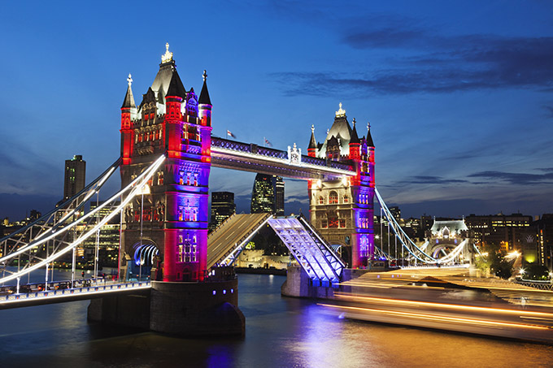

London
 London is the capital city of England. It is the most populous city in the United Kingdom, with a metropolitan area of over 13 million inhabitants.
Standing on the River Thames, London has been a major settlement for two millennia, its history going back to its founding by the Romans, who named it Londinium.
London, city, capital of the United Kingdom. It is among the oldest of the world’s great cities—its history spanning nearly two millennia—and one of the most cosmopolitan. By far Britain’s largest metropolis, it is also the country’s economic, transportation, and cultural centre.
millennia, its history going back to its founding by the Romans, who named it Londinium.| Main Language | Currency | More Info |
|---|---|---|
| English | GB £ | Wiki |